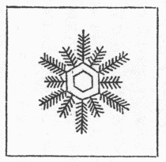
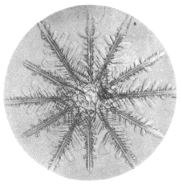

六華豊年の兆という言葉がある位、雪の結晶といえば六花ときまっているように思われているが、中には十二花のものもある。第２図の写真は一九三四年の冬十勝岳で撮られた十二花の結晶の一例であるが、その外に、三花四花などの結晶も案外珍しくない。
十二花の雪は実は天保三年刊行の土井
利位の『雪華図説』に立派な摸写が出ている。第１図はそれを転載したもので、長短二種の枝が交互に出ている点に注目すべきである。この結晶は六花二個が重って出来ているので、土井利位の観察の正当であったことは第２図をよく見れば分る。
もっとも
虫目金で見てただ摸写しただけであるから、それだけでは科学的価値がないという人があるかも知れない。しかし、自然のある珍しい現象を発見することは、案外科学的研究の端緒ではなくて、その窮極であるのかも知れない。それは科学の目的の定義が決まるまでは分らないことなのである。
（昭和十一年二月『東京朝日新聞』）
［＃改ページ］

第１図

第２図